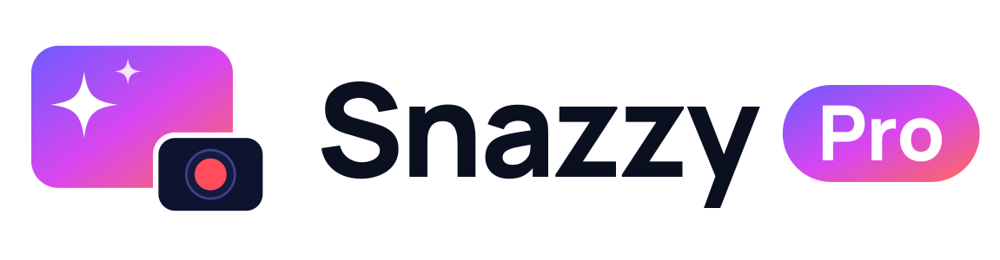
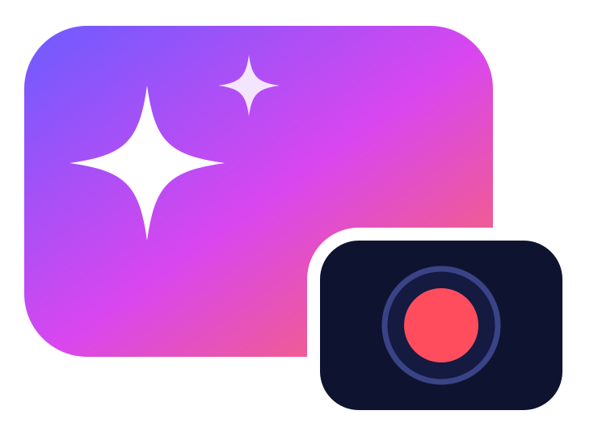
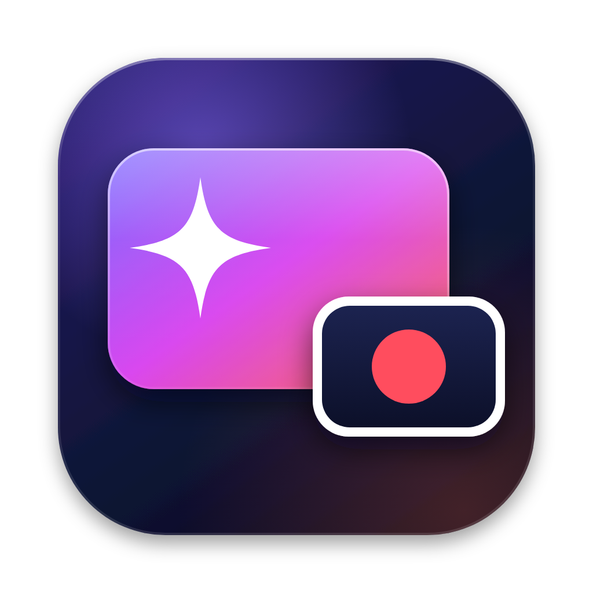

The mark
The product in one picture: a vivid stage (your slide or screen) with an AI sparkle, and a camera inset in the corner with a live record dot.



App icon
macOS icon grid (824 px body on 1024). Below 64 px, a simplified version keeps the mark readable.

Colour
Deep ink and a spotlight gradient. Red means recording and nothing else. Mint marks things that are live or local; amber marks the cloud.
Typography
Manrope for the brand (open licence, outlined in the wordmark). The macOS system font inside the app.
Signature motif
Picture-in-picture: a small rounded box in the corner of a larger one. Use it for illustrations, empty states and video thumbnails. Only the record dot pulses, and only while recording.
Rounded corners of about 18% of a shape's height.
Motion150–250 ms, ease-out. Calm and quick, never bouncy.
Clear spaceAround the logo, at least the height of the camera inset.
Minimum sizeGlyph 16 px tall; lockup 120 px wide.
Voice
Plain, confident, warm. Say what happened and what's next.
| Do | Don't |
|---|---|
| Recording saved. 4:12, no dropped frames. | Your amazing masterpiece has been successfully saved! |
| Your iPad isn't sending video. Is it unlocked? | Error -11819: device stall detected. |
| Built a 6-slide deck. Want a darker theme? | As an AI, I have generated slides for you. |
Name
Snazzy Pro: two words, both capitalised. Short form in running text: Snazzy. Not "SnazzyPro", "Snazzy pro" or "SNAZZY PRO".